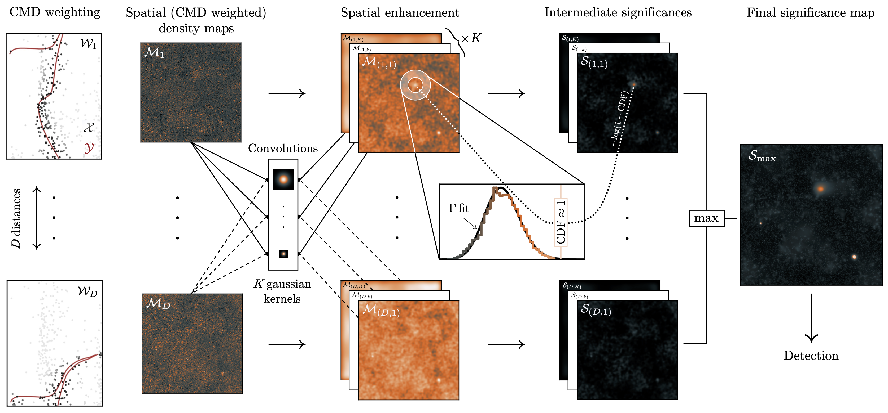

The algorithm is entirely Python-based. Please feel free to download it following the intructions from the GitHub link above. A full description of the algorithm is provided in Rusterucci et al. (2026) but it can be summarised by Figure 1 of the article:

The algorithm begins by weighting stars based on their consistency with a theoretical or empirical isochrone, a procedure repeated for different distance shifts ($\mathcal{W}_d$). After spatially binning the weighted stars, we obtain a density map for each distance ($\mathcal{M}_d$). erose then convolves these maps with Gaussian kernels of different sizes with the aim of enhancing overdensities of varying angular scales ($\mathcal{M}_{d, k}$). To evaluate the significance of a given pixel in any of these maps, a gamma distribution is fitted to the distribution of neighbouring pixels (contained within a surrounding annulus), and the value of the cumulative distribution function of the central pixel is used as part of our significance metric. Repeating this procedure for every pixel of every map, we obtain our intermediate significance maps ($\mathcal{S}_{d, k}$). Finally, by taking the maximum pixel value across all maps, we obtain our final significance map ($\mathcal{S}_\mathrm{max}$), from which overdensities can be extracted and characterised.